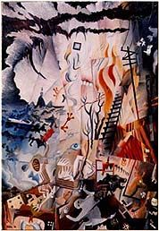
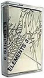

|
|
 |
My own projects have often been based on graphic design forms such as stamps, comic frames and jigsaw pieces. In 1986 my Ticket Art project resulted in an exhibition
of found tickets, collages and artist-designed tickets at Didsbury Library.
Later that year I ran a project called "Elements" where I asked participants for a snippet of their art, some written words, and some sounds on a cassette tape from which I put together an oil painting, drawings, a novelette with rubber stamp illustrations (co-written with Fergus Stewart), and an audio tape of montages and songs. In 1991 I combined my mail art interests and my job as art teacher at a Salford High School by making an Activity Week sculpture - The Global Shopper - a life-size figure pushing a shopping trolley completely covered in shop receipts collected from networkers throughout the world. Also in that year I asked mailartists to send me fake accidental masterpieces by their favourite artists, for a project entitled Jackson Pollock's Shoes. Such lost masterpieces as Seurat's Missing Point, Turner's Worn-out Brushes, and Van Gogh's Plastic Sunflowers were documented as a spoof Christie's auction catalogue. |
||||||||||||||||||||||||||||||||||||||||
|  | ||||||||||||||||||||||||||||||||||||||||||